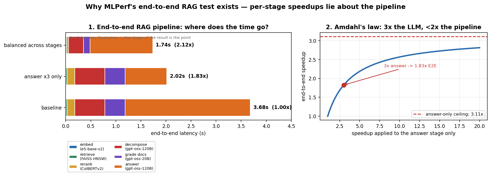
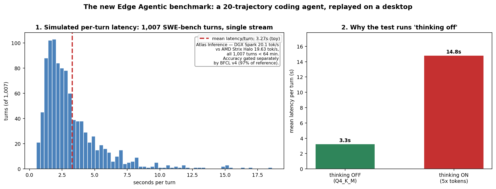
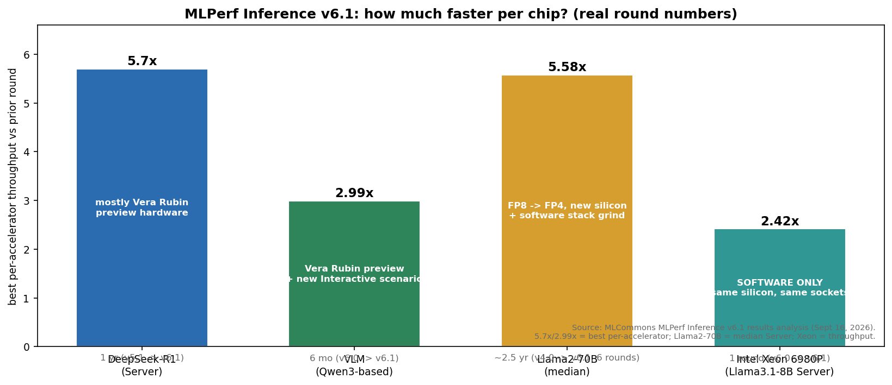
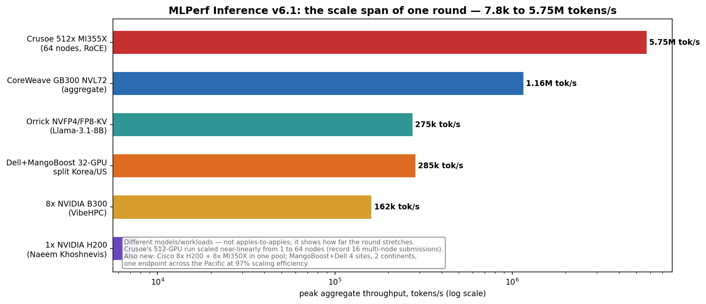

For years, AI benchmarks answered one question: how fast is this chip on this model? A synthetic prompt went in, tokens came out, a number got recorded. That was fine when AI meant "one model, one GPU, one answer."
That world is gone. Nobody ships a bare model anymore. They ship pipelines — an embedder, a vector database, a reranker, and three LLM calls working a question like a relay team. Or an agent that reads code, runs commands, and fixes bugs before answering. Timing one runner and calling it the team's score was becoming fiction.
On September 16, MLCommons released MLPerf Inference v6.1, and it finally grades the relay team. Two brand-new tests: an End-to-End RAG benchmark that times the entire retrieval pipeline as one thing, and an Edge Agentic benchmark that replays 1,007 turns of a real coding agent on a desktop. A record 30 organizations submitted 120 systems and 486 results — and buried in the numbers is a clear signal about where the industry's engineering energy is actually going.
ELI5: the report card grew up
Think of AI benchmarks as report cards. Until now, the report card had one subject: math. "How fast can you solve this equation?" Useful — but your AI doesn't do math homework all day. It searches documents, reads them, reasons over what it found, and writes an answer. That's a group project.
The old test timed one kid on the math worksheet and extrapolated. The new test times the whole group project: the researcher (embedder), the librarian (retriever), the editor (reranker), and the writer (LLM). If the writer is a genius but the librarian is slow, the project is slow — and now the report card says so.
The second new test is even more relatable. It takes a recording of an AI coding assistant doing real work — 20 full sessions, 1,007 turns of reading code, running commands, fixing bugs — and replays it on a single machine, one request at a time, exactly the way a developer on a laptop runs an agent. Then it measures how long each turn takes. As first-time submitter Atlas Inference put it: "For the past few years, serious agentic work meant a datacenter round trip. That assumption is what this submission is meant to retire."
How it works, part 1: the RAG test is four models and a database
The End-to-End RAG benchmark measures a complete question-answering pipeline — several models and a vector database working together. The reference implementation runs four models at once: gpt-oss-120B handles query decomposition, sufficiency checking, and answer generation; gpt-oss-20B grades retrieved documents; e5-base-v2 produces embeddings; and ColBERTv2 reranks passages. The corpus is 107,484 passages chunked from 2,515 HTML files; the questions are 824 multi-hop tasks from Google's FRAMES dataset; and each task can loop through up to 5 retrieval rounds before the pipeline decides it has enough evidence.
Two numbers come out: documents per second for building the FAISS HNSW vector index, and tasks per second for answering questions against it. A Llama 3.1-8B judge scores the final answers against a 97% accuracy target — and the judging isn't timed, so you can't buy accuracy with a slow judge.
Why does this matter? Because of the oldest trap in systems work, and Diagram 1 shows it. Speed up only the answer-generation stage 3x — a faster GPU, speculative decoding, whatever — and the end-to-end pipeline moves only 1.83x. Even an infinitely fast LLM caps out at ~3.1x, because the other stages (retrieve, rerank, decompose, grade) don't care how fast your model is. Meanwhile, modest 2–4x improvements spread across every stage beat the single-stage 3x: 2.12x end-to-end.
The companion notebook reproduces all of this in pure numpy: the Amdahl sweep, the "3x headline, 1.83x reality" trap, and the balanced-optimization winner. The moral the benchmark enforces is the same one production teams learn the hard way: per-stage speedups lie about the pipeline. If your workload is a pipeline, a vendor's "3x faster model" headline might be 1.8x for you — and MLPerf now reports your number.
How it works, part 2: a 1,007-turn agent, replayed on a desktop

The Edge Agentic Inference benchmark targets the coding-assistant pattern that has moved onto workstations. The model is Qwen3.6-27B with thinking off, run as a Q4_K_M GGUF under llama.cpp with a 32K context window. The workload is a recorded replay of 20 agentic coding trajectories from SWE-bench Verified — 1,007 turns total, driven in a single stream with one request in flight, the way a developer on a laptop runs an agent. The reported metric is mean latency per turn, with time-to-first-token and time-per-output-token distributions alongside. Accuracy is gated separately: the setup must hit 97% of the reference score on BFCL v4, the function-calling benchmark.
The headline result from Atlas Inference: an NVIDIA DGX Spark completed all 1,007 turns in under 64 minutes at 20.1 tokens/s — and an AMD Strix Halo desktop (Ryzen AI Max+ 395) did it at 19.63 tokens/s. Near parity between a purpose-built AI box and a desktop APU. That's the kind of result this test was designed to surface, and it answers a question every engineering org is asking right now: can this agent run locally?
Diagram 2 shows why the benchmark runs with thinking off: a toy model of per-turn latency (time-to-first-token + tokens × time-per-token) says reasoning's 5x token appetite would blow mean latency per turn up ~4.5x. When every turn is a round trip with the user waiting, tokens are latency.
SOTA, September 2026: what the round actually revealed

The pace. Best per-accelerator results: DeepSeek-R1 is 5.7x faster than a year ago (v5.1 → v6.1), vision-language models are 2.99x faster than six months ago (v6.0 → v6.1), and Llama2-70B's median per-chip throughput is 5.58x up over six rounds since early 2024. Some of that is new hardware — the R1 and VLM jumps rode NVIDIA's Vera Rubin NVL72 in the new preview category. But a serious slice is pure grind: some v6.1 submissions moved from FP8 to FP4 without losing accuracy, Intel's Xeon 6980P gained +142% on identical silicon from software alone, and AMD's ROCm v7 lifted GPT-OSS-120B +38% on the same MI355X hardware. Half of every "hardware generation" is a software release.
The new silicon. Vera Rubin NVL72 made its MLPerf debut (NVIDIA claims 2.5x DeepSeek-R1 and 3.7x Qwen3-VL throughput over GB300 NVL72). AMD showed three CDNA 4 parts including the MI350P — a dual-slot PCIe card (128 CUs, 144GB HBM3E) for standard enterprise chassis. Intel's Arc Pro B70 arrived in a 4-GPU, 128GB-VRAM node that ran everything from Whisper to the new RAG test. Speculative decoding — previously allowed only for DeepSeek-R1 — is now officially supported in the GPT-OSS-120B interactive scenario, and the VLM test got a new interactive scenario targeting ~1.5-second responses.
The scale-out. Crusoe ran the largest system in MLPerf Inference history: 512 AMD MI355X GPUs across 64 nodes on standard RoCE Ethernet, pushing 5.75 million tokens/s on GPT-OSS-120B with near-linear scaling from 1 to 64 nodes. Multi-node submissions hit a record 16 — up from zero two years ago. And the exotic entries are the real signal: Cisco pooled 8 NVIDIA H200s and 8 AMD MI350Xs into one inference pool (the round's first cross-vendor heterogeneous system), while MangoBoost and Dell ran four sites on two continents as one endpoint across the Pacific at 97% scaling efficiency — and claimed the first prefill/decode-disaggregated results on AMD GPUs.

The workload shift. For the first time, GPT-OSS-120B drew the most submissions (112) — dethroning Llama2-70B — with DeepSeek-R1 and Qwen3-VL close behind. The benchmark community, which prizes stability above all, has fully embraced mixture-of-experts. Google's entire submission focused on DeepSeek-R1, citing the industry's shift to massive MoE architectures.
The practitioner's rule: buy endpoints, not chips
Three things to take from this round if you deploy models:
- Benchmark your pipeline, not your model. The E2E RAG test exists because per-stage numbers mislead. If your workload is embed → retrieve → rerank → generate, optimize the pipeline's critical path — spreading effort across stages beats tripling one (2.12x vs 1.83x end-to-end in the notebook's toy model).
- Software is half the hardware story. A +142% gain on identical silicon is a free generation. Before buying new accelerators, ask what the serving stack is leaving on the table.
- The benchmark is moving to your side of the glass. Sixteen of 30 submitters already used MLPerf's new API-centric harness — a true client/server setup over standard APIs, the way datacenters actually serve inference. MLPerf Endpoints opens in October 2026 and replaces Inference as the datacenter benchmark in 2027. Soon the number everyone quotes won't be "tokens per chip" but "tokens per dollar at your latency SLA." That's the number you were always trying to compute anyway.
Takeaways
- MLPerf Inference v6.1 (Sept 16, 2026): record 30 submitters, 120 systems, 486 results.
- Two new tests grade the way AI is actually used: an end-to-end RAG pipeline (4 models + vector DB, 824 multi-hop questions, up to 5 retrieval rounds) and an edge agentic benchmark (1,007-turn SWE-bench replay, mean latency per turn).
- Per-accelerator pace: DeepSeek-R1 5.7x/year, VLM 2.99x/6 months, Llama2-70B 5.58x over 6 rounds — new silicon (Vera Rubin, MI350P, Arc Pro B70) plus FP4 and software-only gains (Xeon +142% same chip).
- Speculative decoding is now officially benchmark-supported for GPT-OSS-120B; Vera Rubin, MI350P, and Arc Pro B70 posted their first peer-reviewed numbers.
- Scale is the story: 512 GPUs at 5.75M tok/s, cross-vendor pools (H200 + MI350X), and one endpoint spanning the Pacific at 97% efficiency.
- MLPerf Endpoints opens Oct 2026 and replaces Inference for datacenters in 2027: benchmarks are moving from timing chips to timing endpoints.
- Notebook:
mlperf_inference_v61.ipynb— the Amdahl math, the per-stage trap, and the agentic latency model in pure numpy.